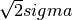
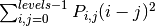
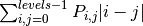
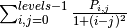
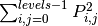
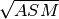
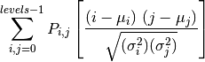

feature¶skimage.feature.blob_dog(image[, min_sigma, ...]) |
Finds blobs in the given grayscale image. |
skimage.feature.blob_doh(image[, min_sigma, ...]) |
Finds blobs in the given grayscale image. |
skimage.feature.blob_log(image[, min_sigma, ...]) |
Finds blobs in the given grayscale image. |
skimage.feature.canny(image[, sigma, ...]) |
Edge filter an image using the Canny algorithm. |
skimage.feature.corner_fast(image[, n, ...]) |
Extract FAST corners for a given image. |
skimage.feature.corner_foerstner(image[, sigma]) |
Compute Foerstner corner measure response image. |
skimage.feature.corner_harris(image[, ...]) |
Compute Harris corner measure response image. |
skimage.feature.corner_kitchen_rosenfeld(image) |
Compute Kitchen and Rosenfeld corner measure response image. |
skimage.feature.corner_moravec |
Compute Moravec corner measure response image. |
skimage.feature.corner_orientations |
Compute the orientation of corners. |
skimage.feature.corner_peaks(image[, ...]) |
Find corners in corner measure response image. |
skimage.feature.corner_shi_tomasi(image[, sigma]) |
Compute Shi-Tomasi (Kanade-Tomasi) corner measure response image. |
skimage.feature.corner_subpix(image, corners) |
Determine subpixel position of corners. |
skimage.feature.daisy(img[, step, radius, ...]) |
Extract DAISY feature descriptors densely for the given image. |
skimage.feature.draw_multiblock_lbp(img, r, ...) |
Multi-block local binary pattern visualization. |
skimage.feature.greycomatrix(image, ...[, ...]) |
Calculate the grey-level co-occurrence matrix. |
skimage.feature.greycoprops(P[, prop]) |
Calculate texture properties of a GLCM. |
skimage.feature.hessian_matrix(image[, ...]) |
Compute Hessian matrix. |
skimage.feature.hessian_matrix_det(image, sigma) |
Computes the approximate Hessian Determinant over an image. |
skimage.feature.hessian_matrix_eigvals(Hxx, ...) |
Compute Eigen values of Hessian matrix. |
skimage.feature.hog(image[, orientations, ...]) |
Extract Histogram of Oriented Gradients (HOG) for a given image. |
skimage.feature.local_binary_pattern(image, P, R) |
Gray scale and rotation invariant LBP (Local Binary Patterns). |
skimage.feature.match_descriptors(...[, ...]) |
Brute-force matching of descriptors. |
skimage.feature.match_template(image, template) |
Match a template to a 2-D or 3-D image using normalized correlation. |
skimage.feature.multiblock_lbp(int_image, r, ...) |
Multi-block local binary pattern (MB-LBP). |
skimage.feature.peak_local_max(image[, ...]) |
Find peaks in an image as coordinate list or boolean mask. |
skimage.feature.plot_matches(ax, image1, ...) |
Plot matched features. |
skimage.feature.register_translation(...[, ...]) |
Efficient subpixel image translation registration by cross-correlation. |
skimage.feature.structure_tensor(image[, ...]) |
Compute structure tensor using sum of squared differences. |
skimage.feature.structure_tensor_eigvals(...) |
Compute Eigen values of structure tensor. |
skimage.feature.BRIEF([descriptor_size, ...]) |
BRIEF binary descriptor extractor. |
skimage.feature.CENSURE([min_scale, ...]) |
CENSURE keypoint detector. |
skimage.feature.ORB([downscale, n_scales, ...]) |
Oriented FAST and rotated BRIEF feature detector and binary descriptor extractor. |
skimage.feature.blob_dog(image, min_sigma=1, max_sigma=50, sigma_ratio=1.6, threshold=2.0, overlap=0.5)[source]¶Finds blobs in the given grayscale image.
Blobs are found using the Difference of Gaussian (DoG) method [R126]. For each blob found, the method returns its coordinates and the standard deviation of the Gaussian kernel that detected the blob.
| Parameters: | image : ndarray
min_sigma : float, optional
max_sigma : float, optional
sigma_ratio : float, optional
threshold : float, optional.
overlap : float, optional
|
|---|---|
| Returns: | A : (n, 3) ndarray
|
Notes
The radius of each blob is approximately .
References
| [R126] | (1, 2) http://en.wikipedia.org/wiki/Blob_detection#The_difference_of_Gaussians_approach |
Examples
>>> from skimage import data, feature
>>> feature.blob_dog(data.coins(), threshold=.5, max_sigma=40)
array([[ 45. , 336. , 16.777216],
[ 52. , 155. , 16.777216],
[ 52. , 216. , 16.777216],
[ 54. , 42. , 16.777216],
[ 54. , 276. , 10.48576 ],
[ 58. , 100. , 10.48576 ],
[ 120. , 272. , 16.777216],
[ 124. , 337. , 10.48576 ],
[ 125. , 45. , 16.777216],
[ 125. , 208. , 10.48576 ],
[ 127. , 102. , 10.48576 ],
[ 128. , 154. , 10.48576 ],
[ 185. , 347. , 16.777216],
[ 193. , 213. , 16.777216],
[ 194. , 277. , 16.777216],
[ 195. , 102. , 16.777216],
[ 196. , 43. , 10.48576 ],
[ 198. , 155. , 10.48576 ],
[ 260. , 46. , 16.777216],
[ 261. , 173. , 16.777216],
[ 263. , 245. , 16.777216],
[ 263. , 302. , 16.777216],
[ 267. , 115. , 10.48576 ],
[ 267. , 359. , 16.777216]])
skimage.feature.blob_doh(image, min_sigma=1, max_sigma=30, num_sigma=10, threshold=0.01, overlap=0.5, log_scale=False)[source]¶Finds blobs in the given grayscale image.
Blobs are found using the Determinant of Hessian method [R127]. For each blob found, the method returns its coordinates and the standard deviation of the Gaussian Kernel used for the Hessian matrix whose determinant detected the blob. Determinant of Hessians is approximated using [R128].
| Parameters: | image : ndarray
min_sigma : float, optional
max_sigma : float, optional
num_sigma : int, optional
threshold : float, optional.
overlap : float, optional
log_scale : bool, optional
|
|---|---|
| Returns: | A : (n, 3) ndarray
|
Notes
The radius of each blob is approximately sigma.
Computation of Determinant of Hessians is independent of the standard
deviation. Therefore detecting larger blobs won’t take more time. In
methods line blob_dog() and blob_log() the computation
of Gaussians for larger sigma takes more time. The downside is that
this method can’t be used for detecting blobs of radius less than 3px
due to the box filters used in the approximation of Hessian Determinant.
References
| [R127] | (1, 2) http://en.wikipedia.org/wiki/Blob_detection#The_determinant_of_the_Hessian |
| [R128] | (1, 2) Herbert Bay, Andreas Ess, Tinne Tuytelaars, Luc Van Gool, “SURF: Speeded Up Robust Features” ftp://ftp.vision.ee.ethz.ch/publications/articles/eth_biwi_00517.pdf |
Examples
>>> from skimage import data, feature
>>> img = data.coins()
>>> feature.blob_doh(img)
array([[ 121. , 271. , 30. ],
[ 123. , 44. , 23.55555556],
[ 123. , 205. , 20.33333333],
[ 124. , 336. , 20.33333333],
[ 126. , 101. , 20.33333333],
[ 126. , 153. , 20.33333333],
[ 156. , 302. , 30. ],
[ 185. , 348. , 30. ],
[ 192. , 212. , 23.55555556],
[ 193. , 275. , 23.55555556],
[ 195. , 100. , 23.55555556],
[ 197. , 44. , 20.33333333],
[ 197. , 153. , 20.33333333],
[ 260. , 173. , 30. ],
[ 262. , 243. , 23.55555556],
[ 265. , 113. , 23.55555556],
[ 270. , 363. , 30. ]])
skimage.feature.blob_log(image, min_sigma=1, max_sigma=50, num_sigma=10, threshold=0.2, overlap=0.5, log_scale=False)[source]¶Finds blobs in the given grayscale image.
Blobs are found using the Laplacian of Gaussian (LoG) method [R129]. For each blob found, the method returns its coordinates and the standard deviation of the Gaussian kernel that detected the blob.
| Parameters: | image : ndarray
min_sigma : float, optional
max_sigma : float, optional
num_sigma : int, optional
threshold : float, optional.
overlap : float, optional
log_scale : bool, optional
|
|---|---|
| Returns: | A : (n, 3) ndarray
|
Notes
The radius of each blob is approximately .
References
| [R129] | (1, 2) http://en.wikipedia.org/wiki/Blob_detection#The_Laplacian_of_Gaussian |
Examples
>>> from skimage import data, feature, exposure
>>> img = data.coins()
>>> img = exposure.equalize_hist(img) # improves detection
>>> feature.blob_log(img, threshold = .3)
array([[ 113. , 323. , 1. ],
[ 121. , 272. , 17.33333333],
[ 124. , 336. , 11.88888889],
[ 126. , 46. , 11.88888889],
[ 126. , 208. , 11.88888889],
[ 127. , 102. , 11.88888889],
[ 128. , 154. , 11.88888889],
[ 185. , 344. , 17.33333333],
[ 194. , 213. , 17.33333333],
[ 194. , 276. , 17.33333333],
[ 197. , 44. , 11.88888889],
[ 198. , 103. , 11.88888889],
[ 198. , 155. , 11.88888889],
[ 260. , 174. , 17.33333333],
[ 263. , 244. , 17.33333333],
[ 263. , 302. , 17.33333333],
[ 266. , 115. , 11.88888889]])
skimage.feature.canny(image, sigma=1.0, low_threshold=None, high_threshold=None, mask=None, use_quantiles=False)[source]¶Edge filter an image using the Canny algorithm.
| Parameters: | image : 2D array
sigma : float
low_threshold : float
high_threshold : float
mask : array, dtype=bool, optional
use_quantiles : bool, optional
|
|---|---|
| Returns: | output : 2D array (image)
|
See also
skimage.sobel
Notes
The steps of the algorithm are as follows:
sigma width.References
Canny, J., A Computational Approach To Edge Detection, IEEE Trans. Pattern Analysis and Machine Intelligence, 8:679-714, 1986
William Green’s Canny tutorial http://dasl.mem.drexel.edu/alumni/bGreen/www.pages.drexel.edu/_weg22/can_tut.html
Examples
>>> from skimage import feature
>>> # Generate noisy image of a square
>>> im = np.zeros((256, 256))
>>> im[64:-64, 64:-64] = 1
>>> im += 0.2 * np.random.rand(*im.shape)
>>> # First trial with the Canny filter, with the default smoothing
>>> edges1 = feature.canny(im)
>>> # Increase the smoothing for better results
>>> edges2 = feature.canny(im, sigma=3)
skimage.feature.corner_fast(image, n=12, threshold=0.15)[source]¶Extract FAST corners for a given image.
| Parameters: | image : 2D ndarray
n : int
threshold : float
|
|---|---|
| Returns: | response : ndarray
|
References
| [R130] | Edward Rosten and Tom Drummond “Machine Learning for high-speed corner detection”, http://www.edwardrosten.com/work/rosten_2006_machine.pdf |
| [R131] | Wikipedia, “Features from accelerated segment test”, https://en.wikipedia.org/wiki/Features_from_accelerated_segment_test |
Examples
>>> from skimage.feature import corner_fast, corner_peaks
>>> square = np.zeros((12, 12))
>>> square[3:9, 3:9] = 1
>>> square.astype(int)
array([[0, 0, 0, 0, 0, 0, 0, 0, 0, 0, 0, 0],
[0, 0, 0, 0, 0, 0, 0, 0, 0, 0, 0, 0],
[0, 0, 0, 0, 0, 0, 0, 0, 0, 0, 0, 0],
[0, 0, 0, 1, 1, 1, 1, 1, 1, 0, 0, 0],
[0, 0, 0, 1, 1, 1, 1, 1, 1, 0, 0, 0],
[0, 0, 0, 1, 1, 1, 1, 1, 1, 0, 0, 0],
[0, 0, 0, 1, 1, 1, 1, 1, 1, 0, 0, 0],
[0, 0, 0, 1, 1, 1, 1, 1, 1, 0, 0, 0],
[0, 0, 0, 1, 1, 1, 1, 1, 1, 0, 0, 0],
[0, 0, 0, 0, 0, 0, 0, 0, 0, 0, 0, 0],
[0, 0, 0, 0, 0, 0, 0, 0, 0, 0, 0, 0],
[0, 0, 0, 0, 0, 0, 0, 0, 0, 0, 0, 0]])
>>> corner_peaks(corner_fast(square, 9), min_distance=1)
array([[3, 3],
[3, 8],
[8, 3],
[8, 8]])
skimage.feature.corner_foerstner(image, sigma=1)[source]¶Compute Foerstner corner measure response image.
This corner detector uses information from the auto-correlation matrix A:
A = [(imx**2) (imx*imy)] = [Axx Axy]
[(imx*imy) (imy**2)] [Axy Ayy]
Where imx and imy are first derivatives, averaged with a gaussian filter. The corner measure is then defined as:
w = det(A) / trace(A) (size of error ellipse)
q = 4 * det(A) / trace(A)**2 (roundness of error ellipse)
| Parameters: | image : ndarray
sigma : float, optional
|
|---|---|
| Returns: | w : ndarray
q : ndarray
|
References
| [R132] | http://www.ipb.uni-bonn.de/uploads/tx_ikgpublication/foerstner87.fast.pdf |
| [R133] | http://en.wikipedia.org/wiki/Corner_detection |
Examples
>>> from skimage.feature import corner_foerstner, corner_peaks
>>> square = np.zeros([10, 10])
>>> square[2:8, 2:8] = 1
>>> square.astype(int)
array([[0, 0, 0, 0, 0, 0, 0, 0, 0, 0],
[0, 0, 0, 0, 0, 0, 0, 0, 0, 0],
[0, 0, 1, 1, 1, 1, 1, 1, 0, 0],
[0, 0, 1, 1, 1, 1, 1, 1, 0, 0],
[0, 0, 1, 1, 1, 1, 1, 1, 0, 0],
[0, 0, 1, 1, 1, 1, 1, 1, 0, 0],
[0, 0, 1, 1, 1, 1, 1, 1, 0, 0],
[0, 0, 1, 1, 1, 1, 1, 1, 0, 0],
[0, 0, 0, 0, 0, 0, 0, 0, 0, 0],
[0, 0, 0, 0, 0, 0, 0, 0, 0, 0]])
>>> w, q = corner_foerstner(square)
>>> accuracy_thresh = 0.5
>>> roundness_thresh = 0.3
>>> foerstner = (q > roundness_thresh) * (w > accuracy_thresh) * w
>>> corner_peaks(foerstner, min_distance=1)
array([[2, 2],
[2, 7],
[7, 2],
[7, 7]])
skimage.feature.corner_harris(image, method='k', k=0.05, eps=1e-06, sigma=1)[source]¶Compute Harris corner measure response image.
This corner detector uses information from the auto-correlation matrix A:
A = [(imx**2) (imx*imy)] = [Axx Axy]
[(imx*imy) (imy**2)] [Axy Ayy]
Where imx and imy are first derivatives, averaged with a gaussian filter. The corner measure is then defined as:
det(A) - k * trace(A)**2
or:
2 * det(A) / (trace(A) + eps)
| Parameters: | image : ndarray
method : {‘k’, ‘eps’}, optional
k : float, optional
eps : float, optional
sigma : float, optional
|
|---|---|
| Returns: | response : ndarray
|
References
| [R134] | http://kiwi.cs.dal.ca/~dparks/CornerDetection/harris.htm |
| [R135] | http://en.wikipedia.org/wiki/Corner_detection |
Examples
>>> from skimage.feature import corner_harris, corner_peaks
>>> square = np.zeros([10, 10])
>>> square[2:8, 2:8] = 1
>>> square.astype(int)
array([[0, 0, 0, 0, 0, 0, 0, 0, 0, 0],
[0, 0, 0, 0, 0, 0, 0, 0, 0, 0],
[0, 0, 1, 1, 1, 1, 1, 1, 0, 0],
[0, 0, 1, 1, 1, 1, 1, 1, 0, 0],
[0, 0, 1, 1, 1, 1, 1, 1, 0, 0],
[0, 0, 1, 1, 1, 1, 1, 1, 0, 0],
[0, 0, 1, 1, 1, 1, 1, 1, 0, 0],
[0, 0, 1, 1, 1, 1, 1, 1, 0, 0],
[0, 0, 0, 0, 0, 0, 0, 0, 0, 0],
[0, 0, 0, 0, 0, 0, 0, 0, 0, 0]])
>>> corner_peaks(corner_harris(square), min_distance=1)
array([[2, 2],
[2, 7],
[7, 2],
[7, 7]])
skimage.feature.corner_kitchen_rosenfeld(image, mode='constant', cval=0)[source]¶Compute Kitchen and Rosenfeld corner measure response image.
The corner measure is calculated as follows:
(imxx * imy**2 + imyy * imx**2 - 2 * imxy * imx * imy)
/ (imx**2 + imy**2)
Where imx and imy are the first and imxx, imxy, imyy the second derivatives.
| Parameters: | image : ndarray
mode : {‘constant’, ‘reflect’, ‘wrap’, ‘nearest’, ‘mirror’}, optional
cval : float, optional
|
|---|---|
| Returns: | response : ndarray
|
skimage.feature.corner_moravec()¶Compute Moravec corner measure response image.
This is one of the simplest corner detectors and is comparatively fast but has several limitations (e.g. not rotation invariant).
| Parameters: | image : ndarray
window_size : int, optional (default 1)
|
|---|---|
| Returns: | response : ndarray
|
References
| [R136] | http://kiwi.cs.dal.ca/~dparks/CornerDetection/moravec.htm |
| [R137] | http://en.wikipedia.org/wiki/Corner_detection |
Examples
>>> from skimage.feature import corner_moravec
>>> square = np.zeros([7, 7])
>>> square[3, 3] = 1
>>> square.astype(int)
array([[0, 0, 0, 0, 0, 0, 0],
[0, 0, 0, 0, 0, 0, 0],
[0, 0, 0, 0, 0, 0, 0],
[0, 0, 0, 1, 0, 0, 0],
[0, 0, 0, 0, 0, 0, 0],
[0, 0, 0, 0, 0, 0, 0],
[0, 0, 0, 0, 0, 0, 0]])
>>> corner_moravec(square).astype(int)
array([[0, 0, 0, 0, 0, 0, 0],
[0, 0, 0, 0, 0, 0, 0],
[0, 0, 1, 1, 1, 0, 0],
[0, 0, 1, 2, 1, 0, 0],
[0, 0, 1, 1, 1, 0, 0],
[0, 0, 0, 0, 0, 0, 0],
[0, 0, 0, 0, 0, 0, 0]])
skimage.feature.corner_orientations()¶Compute the orientation of corners.
The orientation of corners is computed using the first order central moment i.e. the center of mass approach. The corner orientation is the angle of the vector from the corner coordinate to the intensity centroid in the local neighborhood around the corner calculated using first order central moment.
| Parameters: | image : 2D array
corners : (N, 2) array
mask : 2D array
|
|---|---|
| Returns: | orientations : (N, 1) array
|
References
| [R138] | Ethan Rublee, Vincent Rabaud, Kurt Konolige and Gary Bradski “ORB : An efficient alternative to SIFT and SURF” http://www.vision.cs.chubu.ac.jp/CV-R/pdf/Rublee_iccv2011.pdf |
| [R139] | Paul L. Rosin, “Measuring Corner Properties” http://users.cs.cf.ac.uk/Paul.Rosin/corner2.pdf |
Examples
>>> from skimage.morphology import octagon
>>> from skimage.feature import (corner_fast, corner_peaks,
... corner_orientations)
>>> square = np.zeros((12, 12))
>>> square[3:9, 3:9] = 1
>>> square.astype(int)
array([[0, 0, 0, 0, 0, 0, 0, 0, 0, 0, 0, 0],
[0, 0, 0, 0, 0, 0, 0, 0, 0, 0, 0, 0],
[0, 0, 0, 0, 0, 0, 0, 0, 0, 0, 0, 0],
[0, 0, 0, 1, 1, 1, 1, 1, 1, 0, 0, 0],
[0, 0, 0, 1, 1, 1, 1, 1, 1, 0, 0, 0],
[0, 0, 0, 1, 1, 1, 1, 1, 1, 0, 0, 0],
[0, 0, 0, 1, 1, 1, 1, 1, 1, 0, 0, 0],
[0, 0, 0, 1, 1, 1, 1, 1, 1, 0, 0, 0],
[0, 0, 0, 1, 1, 1, 1, 1, 1, 0, 0, 0],
[0, 0, 0, 0, 0, 0, 0, 0, 0, 0, 0, 0],
[0, 0, 0, 0, 0, 0, 0, 0, 0, 0, 0, 0],
[0, 0, 0, 0, 0, 0, 0, 0, 0, 0, 0, 0]])
>>> corners = corner_peaks(corner_fast(square, 9), min_distance=1)
>>> corners
array([[3, 3],
[3, 8],
[8, 3],
[8, 8]])
>>> orientations = corner_orientations(square, corners, octagon(3, 2))
>>> np.rad2deg(orientations)
array([ 45., 135., -45., -135.])
skimage.feature.corner_peaks(image, min_distance=1, threshold_abs=None, threshold_rel=0.1, exclude_border=True, indices=True, num_peaks=inf, footprint=None, labels=None)[source]¶Find corners in corner measure response image.
This differs from skimage.feature.peak_local_max in that it suppresses multiple connected peaks with the same accumulator value.
| Parameters: | * : * |
|---|
Examples
>>> from skimage.feature import peak_local_max
>>> response = np.zeros((5, 5))
>>> response[2:4, 2:4] = 1
>>> response
array([[ 0., 0., 0., 0., 0.],
[ 0., 0., 0., 0., 0.],
[ 0., 0., 1., 1., 0.],
[ 0., 0., 1., 1., 0.],
[ 0., 0., 0., 0., 0.]])
>>> peak_local_max(response)
array([[2, 2],
[2, 3],
[3, 2],
[3, 3]])
>>> corner_peaks(response)
array([[2, 2]])
skimage.feature.corner_shi_tomasi(image, sigma=1)[source]¶Compute Shi-Tomasi (Kanade-Tomasi) corner measure response image.
This corner detector uses information from the auto-correlation matrix A:
A = [(imx**2) (imx*imy)] = [Axx Axy]
[(imx*imy) (imy**2)] [Axy Ayy]
Where imx and imy are first derivatives, averaged with a gaussian filter. The corner measure is then defined as the smaller eigenvalue of A:
((Axx + Ayy) - sqrt((Axx - Ayy)**2 + 4 * Axy**2)) / 2
| Parameters: | image : ndarray
sigma : float, optional
|
|---|---|
| Returns: | response : ndarray
|
References
| [R140] | http://kiwi.cs.dal.ca/~dparks/CornerDetection/harris.htm |
| [R141] | http://en.wikipedia.org/wiki/Corner_detection |
Examples
>>> from skimage.feature import corner_shi_tomasi, corner_peaks
>>> square = np.zeros([10, 10])
>>> square[2:8, 2:8] = 1
>>> square.astype(int)
array([[0, 0, 0, 0, 0, 0, 0, 0, 0, 0],
[0, 0, 0, 0, 0, 0, 0, 0, 0, 0],
[0, 0, 1, 1, 1, 1, 1, 1, 0, 0],
[0, 0, 1, 1, 1, 1, 1, 1, 0, 0],
[0, 0, 1, 1, 1, 1, 1, 1, 0, 0],
[0, 0, 1, 1, 1, 1, 1, 1, 0, 0],
[0, 0, 1, 1, 1, 1, 1, 1, 0, 0],
[0, 0, 1, 1, 1, 1, 1, 1, 0, 0],
[0, 0, 0, 0, 0, 0, 0, 0, 0, 0],
[0, 0, 0, 0, 0, 0, 0, 0, 0, 0]])
>>> corner_peaks(corner_shi_tomasi(square), min_distance=1)
array([[2, 2],
[2, 7],
[7, 2],
[7, 7]])
skimage.feature.corner_subpix(image, corners, window_size=11, alpha=0.99)[source]¶Determine subpixel position of corners.
A statistical test decides whether the corner is defined as the intersection of two edges or a single peak. Depending on the classification result, the subpixel corner location is determined based on the local covariance of the grey-values. If the significance level for either statistical test is not sufficient, the corner cannot be classified, and the output subpixel position is set to NaN.
| Parameters: | image : ndarray
corners : (N, 2) ndarray
window_size : int, optional
alpha : float, optional
|
|---|---|
| Returns: | positions : (N, 2) ndarray
|
References
| [R142] | http://www.ipb.uni-bonn.de/uploads/tx_ikgpublication/ foerstner87.fast.pdf |
| [R143] | http://en.wikipedia.org/wiki/Corner_detection |
Examples
>>> from skimage.feature import corner_harris, corner_peaks, corner_subpix
>>> img = np.zeros((10, 10))
>>> img[:5, :5] = 1
>>> img[5:, 5:] = 1
>>> img.astype(int)
array([[1, 1, 1, 1, 1, 0, 0, 0, 0, 0],
[1, 1, 1, 1, 1, 0, 0, 0, 0, 0],
[1, 1, 1, 1, 1, 0, 0, 0, 0, 0],
[1, 1, 1, 1, 1, 0, 0, 0, 0, 0],
[1, 1, 1, 1, 1, 0, 0, 0, 0, 0],
[0, 0, 0, 0, 0, 1, 1, 1, 1, 1],
[0, 0, 0, 0, 0, 1, 1, 1, 1, 1],
[0, 0, 0, 0, 0, 1, 1, 1, 1, 1],
[0, 0, 0, 0, 0, 1, 1, 1, 1, 1],
[0, 0, 0, 0, 0, 1, 1, 1, 1, 1]])
>>> coords = corner_peaks(corner_harris(img), min_distance=2)
>>> coords_subpix = corner_subpix(img, coords, window_size=7)
>>> coords_subpix
array([[ 4.5, 4.5]])
skimage.feature.daisy(img, step=4, radius=15, rings=3, histograms=8, orientations=8, normalization='l1', sigmas=None, ring_radii=None, visualize=False)[source]¶Extract DAISY feature descriptors densely for the given image.
DAISY is a feature descriptor similar to SIFT formulated in a way that allows for fast dense extraction. Typically, this is practical for bag-of-features image representations.
The implementation follows Tola et al. [R144] but deviate on the following points:
- Histogram bin contribution are smoothed with a circular Gaussian window over the tonal range (the angular range).
- The sigma values of the spatial Gaussian smoothing in this code do not match the sigma values in the original code by Tola et al. [R145]. In their code, spatial smoothing is applied to both the input image and the center histogram. However, this smoothing is not documented in [R144] and, therefore, it is omitted.
| Parameters: | img : (M, N) array
step : int, optional
radius : int, optional
rings : int, optional
histograms : int, optional
orientations : int, optional
normalization : [ ‘l1’ | ‘l2’ | ‘daisy’ | ‘off’ ], optional
sigmas : 1D array of float, optional
ring_radii : 1D array of int, optional
visualize : bool, optional
|
|---|---|
| Returns: | descs : array
descs_img : (M, N, 3) array (only if visualize==True)
|
References
| [R144] | (1, 2, 3) Tola et al. “Daisy: An efficient dense descriptor applied to wide- baseline stereo.” Pattern Analysis and Machine Intelligence, IEEE Transactions on 32.5 (2010): 815-830. |
| [R145] | (1, 2) http://cvlab.epfl.ch/software/daisy |
skimage.feature.draw_multiblock_lbp(img, r, c, width, height, lbp_code=0, color_greater_block=[1, 1, 1], color_less_block=[0, 0.69, 0.96], alpha=0.5)[source]¶Multi-block local binary pattern visualization.
Blocks with higher sums are colored with alpha-blended white rectangles, whereas blocks with lower sums are colored alpha-blended cyan. Colors and the alpha parameter can be changed.
| Parameters: | img : ndarray of float or uint
r : int
c : int
width : int
height : int
lbp_code : int
color_greater_block : list of 3 floats
color_greater_block : list of 3 floats
alpha : float
|
|---|---|
| Returns: | output : ndarray of float
|
References
| [R146] | Face Detection Based on Multi-Block LBP Representation. Lun Zhang, Rufeng Chu, Shiming Xiang, Shengcai Liao, Stan Z. Li http://www.cbsr.ia.ac.cn/users/scliao/papers/Zhang-ICB07-MBLBP.pdf |
skimage.feature.greycomatrix(image, distances, angles, levels=256, symmetric=False, normed=False)[source]¶Calculate the grey-level co-occurrence matrix.
A grey level co-occurrence matrix is a histogram of co-occurring greyscale values at a given offset over an image.
| Parameters: | image : array_like of uint8
distances : array_like
angles : array_like
levels : int, optional
symmetric : bool, optional
normed : bool, optional
|
|---|---|
| Returns: | P : 4-D ndarray
|
References
| [R147] | The GLCM Tutorial Home Page, http://www.fp.ucalgary.ca/mhallbey/tutorial.htm |
| [R148] | Pattern Recognition Engineering, Morton Nadler & Eric P. Smith |
| [R149] | Wikipedia, http://en.wikipedia.org/wiki/Co-occurrence_matrix |
Examples
Compute 2 GLCMs: One for a 1-pixel offset to the right, and one for a 1-pixel offset upwards.
>>> image = np.array([[0, 0, 1, 1],
... [0, 0, 1, 1],
... [0, 2, 2, 2],
... [2, 2, 3, 3]], dtype=np.uint8)
>>> result = greycomatrix(image, [1], [0, np.pi/4, np.pi/2, 3*np.pi/4], levels=4)
>>> result[:, :, 0, 0]
array([[2, 2, 1, 0],
[0, 2, 0, 0],
[0, 0, 3, 1],
[0, 0, 0, 1]], dtype=uint32)
>>> result[:, :, 0, 1]
array([[1, 1, 3, 0],
[0, 1, 1, 0],
[0, 0, 0, 2],
[0, 0, 0, 0]], dtype=uint32)
>>> result[:, :, 0, 2]
array([[3, 0, 2, 0],
[0, 2, 2, 0],
[0, 0, 1, 2],
[0, 0, 0, 0]], dtype=uint32)
>>> result[:, :, 0, 3]
array([[2, 0, 0, 0],
[1, 1, 2, 0],
[0, 0, 2, 1],
[0, 0, 0, 0]], dtype=uint32)
skimage.feature.greycoprops(P, prop='contrast')[source]¶Calculate texture properties of a GLCM.
Compute a feature of a grey level co-occurrence matrix to serve as a compact summary of the matrix. The properties are computed as follows:
‘contrast’: 
‘dissimilarity’: 
‘homogeneity’: 
‘ASM’: 
‘energy’: 

| Parameters: | P : ndarray
prop : {‘contrast’, ‘dissimilarity’, ‘homogeneity’, ‘energy’, ‘correlation’, ‘ASM’}, optional
|
|---|---|
| Returns: | results : 2-D ndarray
|
References
| [R150] | The GLCM Tutorial Home Page, http://www.fp.ucalgary.ca/mhallbey/tutorial.htm |
Examples
Compute the contrast for GLCMs with distances [1, 2] and angles [0 degrees, 90 degrees]
>>> image = np.array([[0, 0, 1, 1],
... [0, 0, 1, 1],
... [0, 2, 2, 2],
... [2, 2, 3, 3]], dtype=np.uint8)
>>> g = greycomatrix(image, [1, 2], [0, np.pi/2], levels=4,
... normed=True, symmetric=True)
>>> contrast = greycoprops(g, 'contrast')
>>> contrast
array([[ 0.58333333, 1. ],
[ 1.25 , 2.75 ]])
skimage.feature.hessian_matrix(image, sigma=1, mode='constant', cval=0)[source]¶Compute Hessian matrix.
The Hessian matrix is defined as:
H = [Hxx Hxy]
[Hxy Hyy]
which is computed by convolving the image with the second derivatives of the Gaussian kernel in the respective x- and y-directions.
| Parameters: | image : ndarray
sigma : float
mode : {‘constant’, ‘reflect’, ‘wrap’, ‘nearest’, ‘mirror’}, optional
cval : float, optional
|
|---|---|
| Returns: | Hxx : ndarray
Hxy : ndarray
Hyy : ndarray
|
Examples
>>> from skimage.feature import hessian_matrix
>>> square = np.zeros((5, 5))
>>> square[2, 2] = -1.0 / 1591.54943092
>>> Hxx, Hxy, Hyy = hessian_matrix(square, sigma=0.1)
>>> Hxx
array([[ 0., 0., 0., 0., 0.],
[ 0., 0., 0., 0., 0.],
[ 0., 0., 1., 0., 0.],
[ 0., 0., 0., 0., 0.],
[ 0., 0., 0., 0., 0.]])
skimage.feature.hessian_matrix_det(image, sigma)[source]¶Computes the approximate Hessian Determinant over an image.
This method uses box filters over integral images to compute the approximate Hessian Determinant as described in [R151].
| Parameters: | image : array
sigma : float
|
|---|---|
| Returns: | out : array
|
Notes
The running time of this method only depends on size of the image. It is independent of sigma as one would expect. The downside is that the result for sigma less than 3 is not accurate, i.e., not similar to the result obtained if someone computed the Hessian and took it’s determinant.
References
| [R151] | (1, 2) Herbert Bay, Andreas Ess, Tinne Tuytelaars, Luc Van Gool, “SURF: Speeded Up Robust Features” ftp://ftp.vision.ee.ethz.ch/publications/articles/eth_biwi_00517.pdf |
skimage.feature.hessian_matrix_eigvals(Hxx, Hxy, Hyy)[source]¶Compute Eigen values of Hessian matrix.
| Parameters: | Hxx : ndarray
Hxy : ndarray
Hyy : ndarray
|
|---|---|
| Returns: | l1 : ndarray
l2 : ndarray
|
Examples
>>> from skimage.feature import hessian_matrix, hessian_matrix_eigvals
>>> square = np.zeros((5, 5))
>>> square[2, 2] = -1 / 1591.54943092
>>> Hxx, Hxy, Hyy = hessian_matrix(square, sigma=0.1)
>>> hessian_matrix_eigvals(Hxx, Hxy, Hyy)[0]
array([[ 0., 0., 0., 0., 0.],
[ 0., 0., 0., 0., 0.],
[ 0., 0., 1., 0., 0.],
[ 0., 0., 0., 0., 0.],
[ 0., 0., 0., 0., 0.]])
skimage.feature.hog(image, orientations=9, pixels_per_cell=(8, 8), cells_per_block=(3, 3), visualise=False, transform_sqrt=False, feature_vector=True, normalise=None)[source]¶Extract Histogram of Oriented Gradients (HOG) for a given image.
Compute a Histogram of Oriented Gradients (HOG) by
- (optional) global image normalisation
- computing the gradient image in x and y
- computing gradient histograms
- normalising across blocks
- flattening into a feature vector
| Parameters: | image : (M, N) ndarray
orientations : int
pixels_per_cell : 2 tuple (int, int)
cells_per_block : 2 tuple (int,int)
visualise : bool, optional
transform_sqrt : bool, optional
feature_vector : bool, optional
normalise : bool, deprecated
|
|---|---|
| Returns: | newarr : ndarray
hog_image : ndarray (if visualise=True)
|
Notes
Power law compression, also known as Gamma correction, is used to reduce
the effects of shadowing and illumination variations. The compression makes
the dark regions lighter. When the kwarg transform_sqrt is set to
True, the function computes the square root of each color channel
and then applies the hog algorithm to the image.
References
skimage.feature.local_binary_pattern(image, P, R, method='default')[source]¶Gray scale and rotation invariant LBP (Local Binary Patterns).
LBP is an invariant descriptor that can be used for texture classification.
| Parameters: | image : (N, M) array
P : int
R : float
method : {‘default’, ‘ror’, ‘uniform’, ‘var’}
|
|---|---|
| Returns: | output : (N, M) array
|
References
| [R152] | Multiresolution Gray-Scale and Rotation Invariant Texture Classification with Local Binary Patterns. Timo Ojala, Matti Pietikainen, Topi Maenpaa. http://www.rafbis.it/biplab15/images/stories/docenti/Danielriccio/Articoliriferimento/LBP.pdf, 2002. |
| [R153] | (1, 2) Face recognition with local binary patterns. Timo Ahonen, Abdenour Hadid, Matti Pietikainen, http://citeseerx.ist.psu.edu/viewdoc/summary?doi=10.1.1.214.6851, 2004. |
skimage.feature.match_descriptors(descriptors1, descriptors2, metric=None, p=2, max_distance=inf, cross_check=True)[source]¶Brute-force matching of descriptors.
For each descriptor in the first set this matcher finds the closest descriptor in the second set (and vice-versa in the case of enabled cross-checking).
| Parameters: | descriptors1 : (M, P) array
descriptors2 : (N, P) array
metric : {‘euclidean’, ‘cityblock’, ‘minkowski’, ‘hamming’, ...}
p : int
max_distance : float
cross_check : bool
|
|---|---|
| Returns: | matches : (Q, 2) array
|
skimage.feature.match_template(image, template, pad_input=False, mode='constant', constant_values=0)[source]¶Match a template to a 2-D or 3-D image using normalized correlation.
The output is an array with values between -1.0 and 1.0. The value at a given position corresponds to the correlation coefficient between the image and the template.
For pad_input=True matches correspond to the center and otherwise to the top-left corner of the template. To find the best match you must search for peaks in the response (output) image.
| Parameters: | image : (M, N[, D]) array
template : (m, n[, d]) array
pad_input : bool
mode : see numpy.pad, optional
constant_values : see numpy.pad, optional
|
|---|---|
| Returns: | output : array
|
References
| [R154] | Briechle and Hanebeck, “Template Matching using Fast Normalized Cross Correlation”, Proceedings of the SPIE (2001). |
| [R155] | J. P. Lewis, “Fast Normalized Cross-Correlation”, Industrial Light and Magic. |
Examples
>>> template = np.zeros((3, 3))
>>> template[1, 1] = 1
>>> template
array([[ 0., 0., 0.],
[ 0., 1., 0.],
[ 0., 0., 0.]])
>>> image = np.zeros((6, 6))
>>> image[1, 1] = 1
>>> image[4, 4] = -1
>>> image
array([[ 0., 0., 0., 0., 0., 0.],
[ 0., 1., 0., 0., 0., 0.],
[ 0., 0., 0., 0., 0., 0.],
[ 0., 0., 0., 0., 0., 0.],
[ 0., 0., 0., 0., -1., 0.],
[ 0., 0., 0., 0., 0., 0.]])
>>> result = match_template(image, template)
>>> np.round(result, 3)
array([[ 1. , -0.125, 0. , 0. ],
[-0.125, -0.125, 0. , 0. ],
[ 0. , 0. , 0.125, 0.125],
[ 0. , 0. , 0.125, -1. ]], dtype=float32)
>>> result = match_template(image, template, pad_input=True)
>>> np.round(result, 3)
array([[-0.125, -0.125, -0.125, 0. , 0. , 0. ],
[-0.125, 1. , -0.125, 0. , 0. , 0. ],
[-0.125, -0.125, -0.125, 0. , 0. , 0. ],
[ 0. , 0. , 0. , 0.125, 0.125, 0.125],
[ 0. , 0. , 0. , 0.125, -1. , 0.125],
[ 0. , 0. , 0. , 0.125, 0.125, 0.125]], dtype=float32)
skimage.feature.multiblock_lbp(int_image, r, c, width, height)[source]¶Multi-block local binary pattern (MB-LBP).
The features are calculated similarly to local binary patterns (LBPs),
(See local_binary_pattern()) except that summed blocks are
used instead of individual pixel values.
MB-LBP is an extension of LBP that can be computed on multiple scales in constant time using the integral image. Nine equally-sized rectangles are used to compute a feature. For each rectangle, the sum of the pixel intensities is computed. Comparisons of these sums to that of the central rectangle determine the feature, similarly to LBP.
| Parameters: | int_image : (N, M) array
r : int
c : int
width : int
height : int
|
|---|---|
| Returns: | output : int
|
References
| [R156] | Face Detection Based on Multi-Block LBP Representation. Lun Zhang, Rufeng Chu, Shiming Xiang, Shengcai Liao, Stan Z. Li http://www.cbsr.ia.ac.cn/users/scliao/papers/Zhang-ICB07-MBLBP.pdf |
skimage.feature.peak_local_max(image, min_distance=1, threshold_abs=None, threshold_rel=None, exclude_border=True, indices=True, num_peaks=inf, footprint=None, labels=None)[source]¶Find peaks in an image as coordinate list or boolean mask.
Peaks are the local maxima in a region of 2 * min_distance + 1 (i.e. peaks are separated by at least min_distance).
If peaks are flat (i.e. multiple adjacent pixels have identical intensities), the coordinates of all such pixels are returned.
If both threshold_abs and threshold_rel are provided, the maximum of the two is chosen as the minimum intensity threshold of peaks.
| Parameters: | image : ndarray
min_distance : int, optional
threshold_abs : float, optional
threshold_rel : float, optional
exclude_border : int, optional
indices : bool, optional
num_peaks : int, optional
footprint : ndarray of bools, optional
labels : ndarray of ints, optional
|
|---|---|
| Returns: | output : ndarray or ndarray of bools
|
Notes
The peak local maximum function returns the coordinates of local peaks (maxima) in an image. A maximum filter is used for finding local maxima. This operation dilates the original image. After comparison of the dilated and original image, this function returns the coordinates or a mask of the peaks where the dilated image equals the original image.
Examples
>>> img1 = np.zeros((7, 7))
>>> img1[3, 4] = 1
>>> img1[3, 2] = 1.5
>>> img1
array([[ 0. , 0. , 0. , 0. , 0. , 0. , 0. ],
[ 0. , 0. , 0. , 0. , 0. , 0. , 0. ],
[ 0. , 0. , 0. , 0. , 0. , 0. , 0. ],
[ 0. , 0. , 1.5, 0. , 1. , 0. , 0. ],
[ 0. , 0. , 0. , 0. , 0. , 0. , 0. ],
[ 0. , 0. , 0. , 0. , 0. , 0. , 0. ],
[ 0. , 0. , 0. , 0. , 0. , 0. , 0. ]])
>>> peak_local_max(img1, min_distance=1)
array([[3, 2],
[3, 4]])
>>> peak_local_max(img1, min_distance=2)
array([[3, 2]])
>>> img2 = np.zeros((20, 20, 20))
>>> img2[10, 10, 10] = 1
>>> peak_local_max(img2, exclude_border=0)
array([[10, 10, 10]])
skimage.feature.plot_matches(ax, image1, image2, keypoints1, keypoints2, matches, keypoints_color='k', matches_color=None, only_matches=False)[source]¶Plot matched features.
| Parameters: | ax : matplotlib.axes.Axes
image1 : (N, M [, 3]) array
image2 : (N, M [, 3]) array
keypoints1 : (K1, 2) array
keypoints2 : (K2, 2) array
matches : (Q, 2) array
keypoints_color : matplotlib color, optional
matches_color : matplotlib color, optional
only_matches : bool, optional
|
|---|
skimage.feature.register_translation(src_image, target_image, upsample_factor=1, space='real')[source]¶Efficient subpixel image translation registration by cross-correlation.
This code gives the same precision as the FFT upsampled cross-correlation in a fraction of the computation time and with reduced memory requirements. It obtains an initial estimate of the cross-correlation peak by an FFT and then refines the shift estimation by upsampling the DFT only in a small neighborhood of that estimate by means of a matrix-multiply DFT.
| Parameters: | src_image : ndarray
target_image : ndarray
upsample_factor : int, optional
space : string, one of “real” or “fourier”
|
|---|---|
| Returns: | shifts : ndarray
error : float
phasediff : float
|
References
| [R157] | Manuel Guizar-Sicairos, Samuel T. Thurman, and James R. Fienup, “Efficient subpixel image registration algorithms,” Optics Letters 33, 156-158 (2008). |
skimage.feature.structure_tensor(image, sigma=1, mode='constant', cval=0)[source]¶Compute structure tensor using sum of squared differences.
The structure tensor A is defined as:
A = [Axx Axy]
[Axy Ayy]
which is approximated by the weighted sum of squared differences in a local window around each pixel in the image.
| Parameters: | image : ndarray
sigma : float
mode : {‘constant’, ‘reflect’, ‘wrap’, ‘nearest’, ‘mirror’}, optional
cval : float, optional
|
|---|---|
| Returns: | Axx : ndarray
Axy : ndarray
Ayy : ndarray
|
Examples
>>> from skimage.feature import structure_tensor
>>> square = np.zeros((5, 5))
>>> square[2, 2] = 1
>>> Axx, Axy, Ayy = structure_tensor(square, sigma=0.1)
>>> Axx
array([[ 0., 0., 0., 0., 0.],
[ 0., 1., 0., 1., 0.],
[ 0., 4., 0., 4., 0.],
[ 0., 1., 0., 1., 0.],
[ 0., 0., 0., 0., 0.]])
skimage.feature.structure_tensor_eigvals(Axx, Axy, Ayy)[source]¶Compute Eigen values of structure tensor.
| Parameters: | Axx : ndarray
Axy : ndarray
Ayy : ndarray
|
|---|---|
| Returns: | l1 : ndarray
l2 : ndarray
|
Examples
>>> from skimage.feature import structure_tensor, structure_tensor_eigvals
>>> square = np.zeros((5, 5))
>>> square[2, 2] = 1
>>> Axx, Axy, Ayy = structure_tensor(square, sigma=0.1)
>>> structure_tensor_eigvals(Axx, Axy, Ayy)[0]
array([[ 0., 0., 0., 0., 0.],
[ 0., 2., 4., 2., 0.],
[ 0., 4., 0., 4., 0.],
[ 0., 2., 4., 2., 0.],
[ 0., 0., 0., 0., 0.]])
BRIEF¶skimage.feature.BRIEF(descriptor_size=256, patch_size=49, mode='normal', sigma=1, sample_seed=1)[source]¶Bases: skimage.feature.util.DescriptorExtractor
BRIEF binary descriptor extractor.
BRIEF (Binary Robust Independent Elementary Features) is an efficient feature point descriptor. It is highly discriminative even when using relatively few bits and is computed using simple intensity difference tests.
For each keypoint, intensity comparisons are carried out for a specifically distributed number N of pixel-pairs resulting in a binary descriptor of length N. For binary descriptors the Hamming distance can be used for feature matching, which leads to lower computational cost in comparison to the L2 norm.
| Parameters: | descriptor_size : int, optional
patch_size : int, optional
mode : {‘normal’, ‘uniform’}, optional
sample_seed : int, optional
sigma : float, optional
|
|---|
Examples
>>> from skimage.feature import (corner_harris, corner_peaks, BRIEF,
... match_descriptors)
>>> import numpy as np
>>> square1 = np.zeros((8, 8), dtype=np.int32)
>>> square1[2:6, 2:6] = 1
>>> square1
array([[0, 0, 0, 0, 0, 0, 0, 0],
[0, 0, 0, 0, 0, 0, 0, 0],
[0, 0, 1, 1, 1, 1, 0, 0],
[0, 0, 1, 1, 1, 1, 0, 0],
[0, 0, 1, 1, 1, 1, 0, 0],
[0, 0, 1, 1, 1, 1, 0, 0],
[0, 0, 0, 0, 0, 0, 0, 0],
[0, 0, 0, 0, 0, 0, 0, 0]], dtype=int32)
>>> square2 = np.zeros((9, 9), dtype=np.int32)
>>> square2[2:7, 2:7] = 1
>>> square2
array([[0, 0, 0, 0, 0, 0, 0, 0, 0],
[0, 0, 0, 0, 0, 0, 0, 0, 0],
[0, 0, 1, 1, 1, 1, 1, 0, 0],
[0, 0, 1, 1, 1, 1, 1, 0, 0],
[0, 0, 1, 1, 1, 1, 1, 0, 0],
[0, 0, 1, 1, 1, 1, 1, 0, 0],
[0, 0, 1, 1, 1, 1, 1, 0, 0],
[0, 0, 0, 0, 0, 0, 0, 0, 0],
[0, 0, 0, 0, 0, 0, 0, 0, 0]], dtype=int32)
>>> keypoints1 = corner_peaks(corner_harris(square1), min_distance=1)
>>> keypoints2 = corner_peaks(corner_harris(square2), min_distance=1)
>>> extractor = BRIEF(patch_size=5)
>>> extractor.extract(square1, keypoints1)
>>> descriptors1 = extractor.descriptors
>>> extractor.extract(square2, keypoints2)
>>> descriptors2 = extractor.descriptors
>>> matches = match_descriptors(descriptors1, descriptors2)
>>> matches
array([[0, 0],
[1, 1],
[2, 2],
[3, 3]])
>>> keypoints1[matches[:, 0]]
array([[2, 2],
[2, 5],
[5, 2],
[5, 5]])
>>> keypoints2[matches[:, 1]]
array([[2, 2],
[2, 6],
[6, 2],
[6, 6]])
Attributes
| descriptors | ((Q, descriptor_size) array of dtype bool) 2D ndarray of binary descriptors of size descriptor_size for Q keypoints after filtering out border keypoints with value at an index (i, j) either being True or False representing the outcome of the intensity comparison for i-th keypoint on j-th decision pixel-pair. It is Q == np.sum(mask). |
| mask | ((N, ) array of dtype bool) Mask indicating whether a keypoint has been filtered out (False) or is described in the descriptors array (True). |
CENSURE¶skimage.feature.CENSURE(min_scale=1, max_scale=7, mode='DoB', non_max_threshold=0.15, line_threshold=10)[source]¶Bases: skimage.feature.util.FeatureDetector
CENSURE keypoint detector.
References
| [R158] | Motilal Agrawal, Kurt Konolige and Morten Rufus Blas “CENSURE: Center Surround Extremas for Realtime Feature Detection and Matching”, http://link.springer.com/content/pdf/10.1007%2F978-3-540-88693-8_8.pdf |
| [R159] | Adam Schmidt, Marek Kraft, Michal Fularz and Zuzanna Domagala “Comparative Assessment of Point Feature Detectors and Descriptors in the Context of Robot Navigation” http://www.jamris.org/01_2013/saveas.php?QUEST=JAMRIS_No01_2013_P_11-20.pdf |
Examples
>>> from skimage.data import astronaut
>>> from skimage.color import rgb2gray
>>> from skimage.feature import CENSURE
>>> img = rgb2gray(astronaut()[100:300, 100:300])
>>> censure = CENSURE()
>>> censure.detect(img)
>>> censure.keypoints
array([[ 4, 148],
[ 12, 73],
[ 21, 176],
[ 91, 22],
[ 93, 56],
[ 94, 22],
[ 95, 54],
[100, 51],
[103, 51],
[106, 67],
[108, 15],
[117, 20],
[122, 60],
[125, 37],
[129, 37],
[133, 76],
[145, 44],
[146, 94],
[150, 114],
[153, 33],
[154, 156],
[155, 151],
[184, 63]])
>>> censure.scales
array([2, 6, 6, 2, 4, 3, 2, 3, 2, 6, 3, 2, 2, 3, 2, 2, 2, 3, 2, 2, 4, 2, 2])
Attributes
| keypoints | ((N, 2) array) Keypoint coordinates as (row, col). |
| scales | ((N, ) array) Corresponding scales. |
ORB¶skimage.feature.ORB(downscale=1.2, n_scales=8, n_keypoints=500, fast_n=9, fast_threshold=0.08, harris_k=0.04)[source]¶Bases: skimage.feature.util.FeatureDetector, skimage.feature.util.DescriptorExtractor
Oriented FAST and rotated BRIEF feature detector and binary descriptor extractor.
| Parameters: | n_keypoints : int, optional
fast_n : int, optional
fast_threshold : float, optional
harris_k : float, optional
downscale : float, optional
n_scales : int, optional
|
|---|
References
| [R160] | Ethan Rublee, Vincent Rabaud, Kurt Konolige and Gary Bradski “ORB: An efficient alternative to SIFT and SURF” http://www.vision.cs.chubu.ac.jp/CV-R/pdf/Rublee_iccv2011.pdf |
Examples
>>> from skimage.feature import ORB, match_descriptors
>>> img1 = np.zeros((100, 100))
>>> img2 = np.zeros_like(img1)
>>> np.random.seed(1)
>>> square = np.random.rand(20, 20)
>>> img1[40:60, 40:60] = square
>>> img2[53:73, 53:73] = square
>>> detector_extractor1 = ORB(n_keypoints=5)
>>> detector_extractor2 = ORB(n_keypoints=5)
>>> detector_extractor1.detect_and_extract(img1)
>>> detector_extractor2.detect_and_extract(img2)
>>> matches = match_descriptors(detector_extractor1.descriptors,
... detector_extractor2.descriptors)
>>> matches
array([[0, 0],
[1, 1],
[2, 2],
[3, 3],
[4, 4]])
>>> detector_extractor1.keypoints[matches[:, 0]]
array([[ 42., 40.],
[ 47., 58.],
[ 44., 40.],
[ 59., 42.],
[ 45., 44.]])
>>> detector_extractor2.keypoints[matches[:, 1]]
array([[ 55., 53.],
[ 60., 71.],
[ 57., 53.],
[ 72., 55.],
[ 58., 57.]])
Attributes
| keypoints | ((N, 2) array) Keypoint coordinates as (row, col). |
| scales | ((N, ) array) Corresponding scales. |
| orientations | ((N, ) array) Corresponding orientations in radians. |
| responses | ((N, ) array) Corresponding Harris corner responses. |
| descriptors | ((Q, descriptor_size) array of dtype bool) 2D array of binary descriptors of size descriptor_size for Q keypoints after filtering out border keypoints with value at an index (i, j) either being True or False representing the outcome of the intensity comparison for i-th keypoint on j-th decision pixel-pair. It is Q == np.sum(mask). |
__init__(downscale=1.2, n_scales=8, n_keypoints=500, fast_n=9, fast_threshold=0.08, harris_k=0.04)[source]¶detect(image)[source]¶Detect oriented FAST keypoints along with the corresponding scale.
| Parameters: | image : 2D array
|
|---|
detect_and_extract(image)[source]¶Detect oriented FAST keypoints and extract rBRIEF descriptors.
Note that this is faster than first calling detect and then extract.
| Parameters: | image : 2D array
|
|---|
extract(image, keypoints, scales, orientations)[source]¶Extract rBRIEF binary descriptors for given keypoints in image.
Note that the keypoints must be extracted using the same downscale and n_scales parameters. Additionally, if you want to extract both keypoints and descriptors you should use the faster detect_and_extract.
| Parameters: | image : 2D array
keypoints : (N, 2) array
scales : (N, ) array
orientations : (N, ) array
|
|---|
 Source
Source